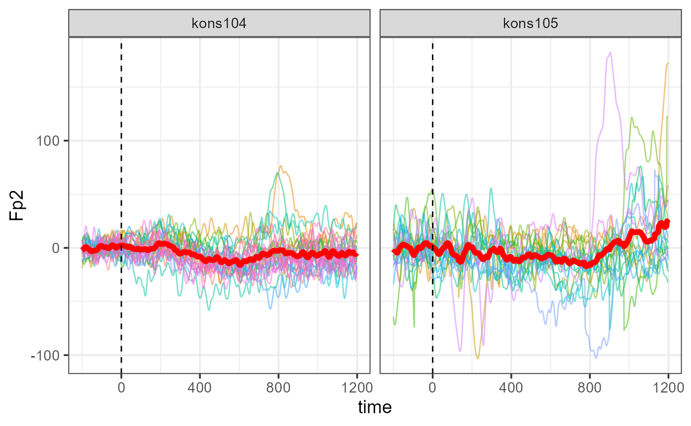

basic-usage.RmdThe BVAtoR package takes segmented output from BVA (.dat files, .vmrk files and .vhdr files) and transforms them into a single file with all voltage values, participants, conditions, and other variables specified by the experimenter for further single trial statistical analysis. This vignette describes the installation and use of the package in order to obtain a (large) dataframe containing EEG data from BVA output.
This package works excusively with BVA (V2.2) export files, i.e. pre-processed, segmented and baseline-corrected data (not averaged data). An important step during segmentation in BVA is to assign the resulting node a meaningful name, ideally containing information about the participant (i.e. participant number) and the condition, separated by underscores (or any other separator).
Upon termination of the classical pre-processing procedure (e.g. re-referencing, filtering, ocular correction, artefact rejection, segmentation, baseline correction) in BVA, the data is ready for export. Note that each condition for each participant will have to be exported separately. See below for instructions on how to export data from BVA.
In BVA, select the node from which you want to export data, namely the baseline corrected node containing information about single trials.
In BVA, click EXPORT/GENERIC DATA/ tick WRITE HEADER FILE and WRITE MARKER FILE/ select TEXT FORMAT for the header and marker file/include participant number and condition in the basename (CRUCIAL!)/ click NEXT
Select TEXT FORMAT as data file format/MULTIPLEXED as data orientation/ LINE DELIMITERS as PC format/ click NEXT
Tick ADD CHANNEL NAMES TO THE DATAFILE/ Tick OVERWRITE DEFAULT DECIMAL SYMBOL (,) and replace to DOT/CUSTOM PRECISION TO SIX OR MORE/ change value layout to SEPARATE VALUES BY CUSTOM SEPARATOR/ set separator to semi-colon (;)/ click NEXT
Untick EXPORT ALL CHANNELS/ remove VEOG, HEOG AND ALL EYE CHANNELS from selected channels / click FINISH
This will create three separate export files in your EXPORT folder. Make a copy of these files and copy all files to a separate folder, which will be the working directory of this current pipeline.
Note: Example File Name To illustrate the naming of files, the file subj100_comp_BaselineCorrection_cogn_incongr_nonviol.dat contains the following information:
subj100: subject number comp: Name of Task Baseline_Correction: Node of export in BVA (i.e. exported after baseline correction before averaging) cogn: Level 1 of Condition 1 congr: Level 1 of Condition 2 non-viol: Level 1 of Condition 3
The BVAtoR package was specifically created to combine the voltage values in the .dat file with the information about the markers in the .vmrk file to generate a large datafile that contains the variables “marker” and “voltage”, among other variables, such as condition etc.
# Load package
library(BVAtoR)BVA_to_R() parametersBVAtoR is based on a number of helper functions which tackle the formatting of the export files and the extraction of crucial information, such as the sampling frequency or the marker names. The helper functions run in the background of the core function of this package, the BVA_to_R() function. Please see below for a more detailed description of the helper functions. The core function takes a number of parameters that should be known to the researcher prior to starting this analysis:
path: path to the data folder with all exort files, e.g. “template/path/to/all/files/” . Specified outside the main function.
full_window_bounds: The total length of the exported segment in ms (e.g. c(-200, 1200). Specified within the main function.
ERP_list: List of ERP components of interest with their associated lower and upper time limits. These should correspond to the time windows of the ERP component sand cover the entire segment. See below for an example. Specified outside the main function.
Note: Ensure to cover the entire length of the segment. Prior to setting ERP time limits, the researcher must be aware of the number of time samples taken during the duration of a segment and the sampling rate. The sampling frequency (SF) in Hz is needed to calculate this time interval, and can be retrieved from the .vhdr file.
If we assume a sampling frequency (SF) of 500Hz the time inbetween voltage samples (in milliseconds ms) is calculated as follows:
1000 ms/SF = Time_Increment 1000 ms/500 = Time_Increment 1000 ms/500 = 2 ms
This reads as: at a sampling frequency of 500 Hz, voltage is measured every 2 ms. Now we need to calculate the number of voltage samples per segment
To calculate the number of voltage samples taken during a segment of (for example) 1400 ms:
Total_segment_Length in ms/ Time_Increment = Number_of_Samples 1400 ms/2 ms = 700 voltage samples
In conclusion, the time bounds for each ERP component cannot be odd numbers. See below for an example. Further parameters to be specified are:
var_labs : variables to inlcude as columns in the final datafile. These correspond to the information given in the exported data file names, i.e. participant, condition etc. Specified within the main function.
sep: specifies the separator with which the variables within the exported data file names are separated by. Specified within the main function.
filename_returned: the name of the file to be returned in csv format, e.g. “Output.csv”. Contains columns for subject, marker, condition (if applicable), timestamp, ERP component (if applicable), node of segmentation, task (if applicable) etc. for further single trial statisitical analysis in R. Specified within the main function.
BVA_to_R() usage
# Help to main function
#?BVA_to_R
# Specify path to export files
path <- "../inst/extdata/"
# Specify list of ERPs (example), ensure to cover entire window length and that they do not overlap
ERPs <- list(
"baseline" = c(-200, 48), # pre-stimulus
"N100" = c(48, 198),
"P200" = c(200, 348),
"N400" = c(350, 498),
"P600" = c(500, 898), # longer P600 window for late learners (example-specific)
"PostP600" = c(900, 1198) # end of segment
)
# Call main function and generate final datafile (obj)
obj <- BVA_to_R(
path = path,
sep = "_",
ERP_list = ERPs,
var_labs = c("Subject", "Comp", "Export_Node",
"Cognate_Status", "Congruency_Type", "Violation_Type"),
full_window_bounds = c(-200, 1198)
)
head(obj)
#> time posit_datapoints Fp2 F8 FT8 T8 TP8 P8 TP10 O2
#> 1: -200 1 -5.132 -1.770 -0.219 2.732 4.565 9.213 -0.862 5.375
#> 2: -198 2 -4.047 -1.380 -0.543 1.518 3.966 8.941 -1.495 5.183
#> 3: -196 3 -2.915 -0.598 -0.586 0.341 3.340 8.509 -2.036 4.824
#> 4: -194 4 -1.929 0.565 -0.241 -0.690 2.540 7.840 -2.474 4.314
#> 5: -192 5 -1.137 2.049 0.470 -1.532 1.387 6.862 -2.753 3.662
#> 6: -190 6 -0.454 3.722 1.395 -2.203 -0.185 5.550 -2.844 2.874
#> Oz O1 TP9 P7 TP7 T7 FT7 F7 FP1 AFz
#> 1: 1.354 -4.257 -4.016 -14.087 -9.069 -4.742 -2.709 -2.273 -2.221 -4.558
#> 2: 0.686 -4.748 -4.816 -14.161 -9.707 -5.096 -1.484 -1.914 -2.004 -3.674
#> 3: -0.021 -5.079 -5.803 -13.910 -9.935 -4.933 -0.084 -1.125 -1.570 -2.402
#> 4: -0.713 -5.215 -6.734 -13.386 -9.775 -4.346 1.267 0.002 -0.953 -0.918
#> 5: -1.306 -5.088 -7.392 -12.635 -9.298 -3.473 2.356 1.351 -0.233 0.646
#> 6: -1.741 -4.658 -7.595 -11.668 -8.576 -2.447 2.999 2.770 0.496 2.209
#> F4 FC4 C4 CP4 P4 Pz P3 CP3 C3 FC3 F3
#> 1: -7.670 -6.508 -7.184 0.137 5.398 3.268 -6.575 -2.973 -1.974 0.263 -1.932
#> 2: -6.318 -6.081 -7.493 -0.881 4.971 3.407 -5.853 -2.190 -0.900 1.233 -1.061
#> 3: -4.613 -5.246 -7.682 -2.129 4.117 3.333 -4.973 -1.258 0.424 2.549 0.324
#> 4: -2.791 -4.202 -7.906 -3.652 2.822 2.982 -4.077 -0.305 1.794 3.980 2.005
#> 5: -1.008 -3.099 -8.238 -5.452 1.139 2.343 -3.261 0.567 3.003 5.314 3.724
#> 6: 0.683 -1.993 -8.625 -7.431 -0.807 1.475 -2.548 1.291 3.897 6.392 5.244
#> Fz FCz CPz Cz descrip marker_num posit_onset ERP Subject
#> 1: -3.884 -1.142 3.987 3.794 S189 Mk2 101 baseline kons104
#> 2: -2.557 0.476 4.463 4.931 S189 Mk2 101 baseline kons104
#> 3: -0.682 2.514 4.854 6.143 S189 Mk2 101 baseline kons104
#> 4: 1.466 4.651 5.037 7.242 S189 Mk2 101 baseline kons104
#> 5: 3.666 6.611 4.915 8.039 S189 Mk2 101 baseline kons104
#> 6: 5.754 8.201 4.450 8.394 S189 Mk2 101 baseline kons104
#> Comp Export_Node Cognate_Status Congruency_Type Violation_Type
#> 1: comp BaselineCorrection noncogn incongr nonviol
#> 2: comp BaselineCorrection noncogn incongr nonviol
#> 3: comp BaselineCorrection noncogn incongr nonviol
#> 4: comp BaselineCorrection noncogn incongr nonviol
#> 5: comp BaselineCorrection noncogn incongr nonviol
#> 6: comp BaselineCorrection noncogn incongr nonviolWe can then use the dataframe for further manipulation/modelling/plotting:
# Plot Fp2 over time for both subjects - line for each marker
ggplot(data = obj, aes(time, Fp2, col = marker_num)) +
geom_line(alpha = 0.5) +
# Add mean
stat_summary(aes(group = 1), fun = mean, geom = "line", size = 2, col = "red") +
facet_wrap(. ~ Subject) +
geom_vline(xintercept = 0, linetype = "dashed") +
theme_bw(base_size = 14) +
theme(legend.position = "none") 
ERP_to_times()
This function converts ERP List to dataframe with ERP components and time vectors.
times <- seq(-200, 1198)
ERP_dat <- ERP_to_times(ERPs, times)
print(ERP_dat)
#> time ERP
#> 1: -200 baseline
#> 2: -199 baseline
#> 3: -198 baseline
#> 4: -197 baseline
#> 5: -196 baseline
#> ---
#> 1396: 1194 PostP600
#> 1397: 1195 PostP600
#> 1398: 1196 PostP600
#> 1399: 1197 PostP600
#> 1400: 1198 PostP600get_markers()
Formats the vmrk files to extract information about markers:
marker_info <- get_markers("../inst/extdata/kons104_comp_BaselineCorrection_noncogn_incongr_nonviol.vmrk")
print(marker_info)
#> descrip posit_datapoints marker_num posit_onset
#> 1: S189 1 Mk2 101
#> 2: S183 701 Mk6 801
#> 3: S188 1401 Mk10 1501
#> 4: S180 2101 Mk15 2201
#> 5: S194 2801 Mk18 2901
#> 6: S191 3501 Mk22 3601
#> 7: S182 4201 Mk26 4301
#> 8: S186 4901 Mk30 5001
#> 9: S199 5601 Mk34 5701
#> 10: S197 6301 Mk38 6401
#> 11: S196 7001 Mk43 7101
#> 12: S203 7701 Mk46 7801
#> 13: S195 8401 Mk51 8501
#> 14: S190 9101 Mk54 9201
#> 15: S200 9801 Mk59 9901
#> 16: S184 10501 Mk63 10601
#> 17: S193 11201 Mk66 11301
#> 18: S205 11901 Mk70 12001
#> 19: S181 12601 Mk74 12701
#> 20: S178 13301 Mk79 13401
#> 21: S187 14001 Mk83 14101
#> 22: S185 14701 Mk87 14801
#> 23: S179 15401 Mk90 15501
#> 24: S201 16101 Mk94 16201
#> 25: S204 16801 Mk99 16901
#> 26: S202 17501 Mk102 17601
#> descrip posit_datapoints marker_num posit_onsetone_vhdr()
The BVA_to_R() function but for a single vhdr file:
file <- "../inst/extdata/kons104_comp_BaselineCorrection_noncogn_incongr_nonviol.vhdr"
path <- "../inst/extdata/"
one_vhdr(
path = path,
filename = file,
sep = "_",
ERP_list = ERPs,
var_labs = c(
"Subject", "Comp", "Export_Node",
"Cognate_Status", "Congruency_Type", "Violation_Type"
),
full_window_bounds = c(-200, 1198)
)
#> time posit_datapoints Fp2 F8 FT8 T8 TP8 P8 TP10
#> 1: -200 1 -5.132 -1.770 -0.219 2.732 4.565 9.213 -0.862
#> 2: -198 2 -4.047 -1.380 -0.543 1.518 3.966 8.941 -1.495
#> 3: -196 3 -2.915 -0.598 -0.586 0.341 3.340 8.509 -2.036
#> 4: -194 4 -1.929 0.565 -0.241 -0.690 2.540 7.840 -2.474
#> 5: -192 5 -1.137 2.049 0.470 -1.532 1.387 6.862 -2.753
#> ---
#> 18222: 1190 18196 19.772 13.677 10.484 10.859 6.442 -0.628 2.124
#> 18223: 1192 18197 21.339 14.228 10.769 10.994 7.086 0.413 3.459
#> 18224: 1194 18198 22.281 14.521 10.731 10.918 7.539 1.227 4.723
#> 18225: 1196 18199 22.541 14.623 10.448 10.693 7.808 1.790 5.848
#> 18226: 1198 18200 22.054 14.579 10.006 10.363 7.880 2.095 6.715
#> O2 Oz O1 TP9 P7 TP7 T7 FT7 F7 FP1
#> 1: 5.375 1.354 -4.257 -4.016 -14.087 -9.069 -4.742 -2.709 -2.273 -2.221
#> 2: 5.183 0.686 -4.748 -4.816 -14.161 -9.707 -5.096 -1.484 -1.914 -2.004
#> 3: 4.824 -0.021 -5.079 -5.803 -13.910 -9.935 -4.933 -0.084 -1.125 -1.570
#> 4: 4.314 -0.713 -5.215 -6.734 -13.386 -9.775 -4.346 1.267 0.002 -0.953
#> 5: 3.662 -1.306 -5.088 -7.392 -12.635 -9.298 -3.473 2.356 1.351 -0.233
#> ---
#> 18222: 0.223 -4.273 -0.775 -7.107 -10.039 -13.537 -7.029 -2.539 -0.039 14.938
#> 18223: 1.049 -3.848 -0.862 -5.942 -10.166 -13.272 -7.327 -2.937 0.572 17.343
#> 18224: 1.759 -3.299 -0.595 -4.504 -9.949 -12.758 -7.302 -3.222 0.703 19.413
#> 18225: 2.413 -2.581 0.021 -3.007 -9.448 -12.050 -6.992 -3.328 0.350 20.850
#> 18226: 3.107 -1.648 0.974 -1.635 -8.667 -11.141 -6.411 -3.141 -0.359 21.435
#> AFz F4 FC4 C4 CP4 P4 Pz P3 CP3 C3
#> 1: -4.558 -7.670 -6.508 -7.184 0.137 5.398 3.268 -6.575 -2.973 -1.974
#> 2: -3.674 -6.318 -6.081 -7.493 -0.881 4.971 3.407 -5.853 -2.190 -0.900
#> 3: -2.402 -4.613 -5.246 -7.682 -2.129 4.117 3.333 -4.973 -1.258 0.424
#> 4: -0.918 -2.791 -4.202 -7.906 -3.652 2.822 2.982 -4.077 -0.305 1.794
#> 5: 0.646 -1.008 -3.099 -8.238 -5.452 1.139 2.343 -3.261 0.567 3.003
#> ---
#> 18222: 16.521 18.660 21.484 13.345 6.427 5.928 -2.389 -8.759 -15.869 -16.665
#> 18223: 17.886 19.127 21.192 12.446 5.719 5.574 -3.198 -10.387 -17.758 -19.098
#> 18224: 18.712 19.045 20.381 11.318 4.979 5.273 -3.674 -11.398 -18.949 -20.843
#> 18225: 18.891 18.483 19.132 10.117 4.323 5.163 -3.757 -11.709 -19.319 -21.698
#> 18226: 18.412 17.532 17.562 9.010 3.872 5.343 -3.393 -11.246 -18.767 -21.512
#> FC3 F3 Fz FCz CPz Cz descrip marker_num posit_onset
#> 1: 0.263 -1.932 -3.884 -1.142 3.987 3.794 S189 Mk2 101
#> 2: 1.233 -1.061 -2.557 0.476 4.463 4.931 S189 Mk2 101
#> 3: 2.549 0.324 -0.682 2.514 4.854 6.143 S189 Mk2 101
#> 4: 3.980 2.005 1.466 4.651 5.037 7.242 S189 Mk2 101
#> 5: 5.314 3.724 3.666 6.611 4.915 8.039 S189 Mk2 101
#> ---
#> 18222: 1.837 9.483 12.874 16.063 0.494 6.625 S202 Mk102 17601
#> 18223: 1.207 10.522 13.988 16.001 -1.074 4.815 S202 Mk102 17601
#> 18224: 0.500 11.151 14.454 15.360 -2.523 2.761 S202 Mk102 17601
#> 18225: -0.218 11.266 14.218 14.248 -3.655 0.700 S202 Mk102 17601
#> 18226: -0.840 10.851 13.323 12.797 -4.289 -1.109 S202 Mk102 17601
#> ERP Subject Comp Export_Node Cognate_Status Congruency_Type
#> 1: baseline kons104 comp BaselineCorrection noncogn incongr
#> 2: baseline kons104 comp BaselineCorrection noncogn incongr
#> 3: baseline kons104 comp BaselineCorrection noncogn incongr
#> 4: baseline kons104 comp BaselineCorrection noncogn incongr
#> 5: baseline kons104 comp BaselineCorrection noncogn incongr
#> ---
#> 18222: PostP600 kons104 comp BaselineCorrection noncogn incongr
#> 18223: PostP600 kons104 comp BaselineCorrection noncogn incongr
#> 18224: PostP600 kons104 comp BaselineCorrection noncogn incongr
#> 18225: PostP600 kons104 comp BaselineCorrection noncogn incongr
#> 18226: PostP600 kons104 comp BaselineCorrection noncogn incongr
#> Violation_Type
#> 1: nonviol
#> 2: nonviol
#> 3: nonviol
#> 4: nonviol
#> 5: nonviol
#> ---
#> 18222: nonviol
#> 18223: nonviol
#> 18224: nonviol
#> 18225: nonviol
#> 18226: nonviol
sessionInfo()
#> R version 4.0.3 (2020-10-10)
#> Platform: x86_64-w64-mingw32/x64 (64-bit)
#> Running under: Windows 10 x64 (build 17134)
#>
#> Matrix products: default
#>
#> locale:
#> [1] LC_COLLATE=Dutch_Netherlands.1252 LC_CTYPE=Dutch_Netherlands.1252
#> [3] LC_MONETARY=Dutch_Netherlands.1252 LC_NUMERIC=C
#> [5] LC_TIME=Dutch_Netherlands.1252
#>
#> attached base packages:
#> [1] stats graphics grDevices utils datasets methods base
#>
#> other attached packages:
#> [1] ggplot2_3.3.2 BVAtoR_0.2.0
#>
#> loaded via a namespace (and not attached):
#> [1] compiler_4.0.3 pillar_1.4.7 tools_4.0.3 digest_0.6.27
#> [5] lattice_0.20-41 evaluate_0.14 memoise_1.1.0 lifecycle_0.2.0
#> [9] tibble_3.0.4 gtable_0.3.0 pkgconfig_2.0.3 rlang_0.4.9
#> [13] rstudioapi_0.13 yaml_2.2.1 pkgdown_1.6.1 xfun_0.19
#> [17] withr_2.3.0 stringr_1.4.0 dplyr_1.0.2 knitr_1.30
#> [21] desc_1.2.0 generics_0.1.0 fs_1.5.0 vctrs_0.3.6
#> [25] systemfonts_0.3.2 rprojroot_2.0.2 grid_4.0.3 tidyselect_1.1.0
#> [29] glue_1.4.2 data.table_1.13.4 R6_2.5.0 textshaping_0.2.1
#> [33] rmarkdown_2.6 farver_2.0.3 purrr_0.3.4 magrittr_2.0.1
#> [37] scales_1.1.1 htmltools_0.5.0 ellipsis_0.3.1 assertthat_0.2.1
#> [41] colorspace_2.0-0 labeling_0.4.2 ragg_0.4.0 ini_0.3.1
#> [45] stringi_1.5.3 munsell_0.5.0 crayon_1.3.4 zoo_1.8-8